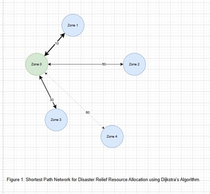

To find the shortest and fastest delivery routes between disaster-affected zones using Dijkstra’s Algorithm.
Dijkstra’s Algorithm is a graph-based shortest path algorithm that identifies the minimum distance from the central relief center to all affected zones, ensuring faster delivery of relief supplies.
#include <stdio.h>
#include <limits.h>
#define V 5
int minDistance(int dist[], int sptSet[]) {
int min = INT_MAX, min_index = -1;
for (int v = 0; v < V; v++) {
if (!sptSet[v] && dist[v] <= min) {
min = dist[v];
min_index = v;
}
}
return min_index;
}
void dijkstra(int graph[V][V], int src) {
int dist[V], sptSet[V];
for (int i = 0; i < V; i++) {
dist[i] = INT_MAX;
sptSet[i] = 0;
}
dist[src] = 0;
for (int count = 0; count < V - 1; count++) {
int u = minDistance(dist, sptSet);
sptSet[u] = 1;
for (int v = 0; v < V; v++) {
if (!sptSet[v] && graph[u][v] && dist[u] != INT_MAX &&
dist[u] + graph[u][v] < dist[v]) {
dist[v] = dist[u] + graph[u][v];
}
}
}
printf("Zone\tShortest Distance from Relief Center\n");
for (int i = 0; i < V; i++)
printf("%d\t\t%d\n", i, dist[i]);
}
int main() {
int graph[V][V] = {
{0, 10, 0, 30, 100},
{10, 0, 50, 0, 0},
{0, 50, 0, 20, 10},
{30, 0, 20, 0, 60},
{100, 0, 10, 60, 0}
};
dijkstra(graph, 0);
return 0;
}| Destination Zone | Shortest Path Cost | Optimal Path Taken |
|---|---|---|
| Zone 1 | 10 | Zone 0 → Zone 1 |
| Zone 2 | 50 | Zone 0 → Zone 2 |
| Zone 3 | 30 | Zone 0 → Zone 3 |
| Zone 4 | 60 | Zone 0 → Zone 4 |

Figure: Graph showing shortest paths between zones